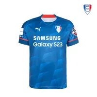

|
 | |
| 구단로고 | 마스코트 | 유니폼 |
|---|
| 구단 명칭 | 수원 삼성 | |
|---|---|---|
| 별칭 | 청백적 | |
| 홈구장 | 수원월드컴경기장 | |
| 창단 | 1995년 12월 15일 | |
| 감독 | 김병수 | |
| 주장 | 이기제 | |
| 우승기록 | ||
| K리그1 | 1998, 1999, 2004, 2008 | |
| FA컵 | 2002, 2009, 2010, 2016, 2019 | |
| AFC 챔피언스 리그 | 2000-01, 2001-02 | |
| 클럽 수상 | ||
|
2014 K리그 풀 스타디움상 2014 K리그 유소년 클럽상 2015 K리그 페어플레이상 2015 대한민국 스포츠산업대상 우수프로스포츠단상 2016 FA컵 페어플레이상 2017 K리그 유소년 클럽상 2019 K리그 유소년 클럽상 2019 FA컵 페어플레이상 2020 K리그 그린 스타디움상 2020 대한민국광고대상 공익광고 부문 은상 2021 K리그 그린 위너스상 |
||